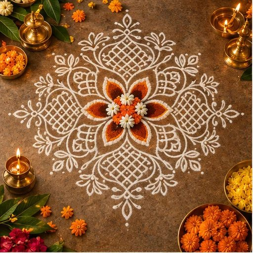
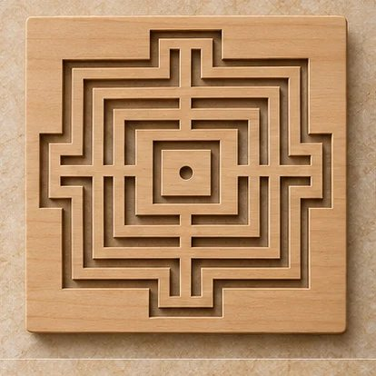
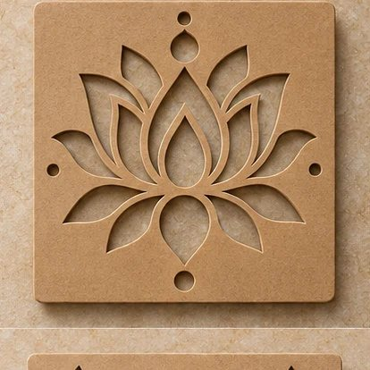
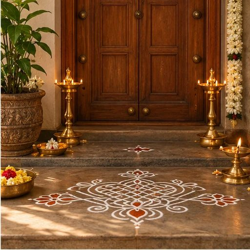
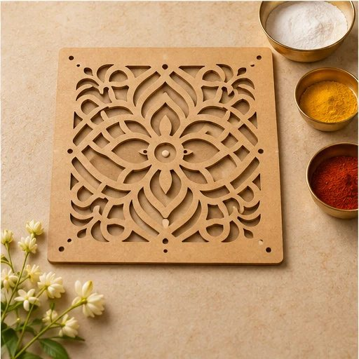
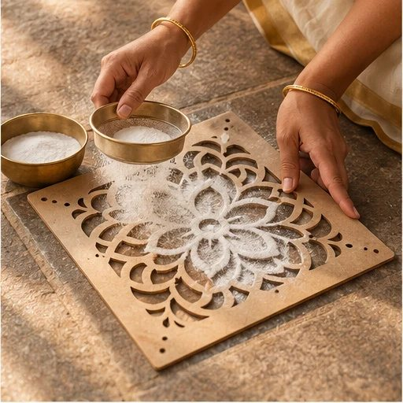
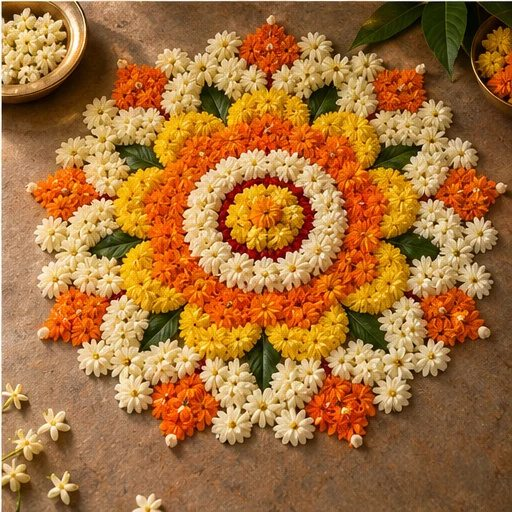
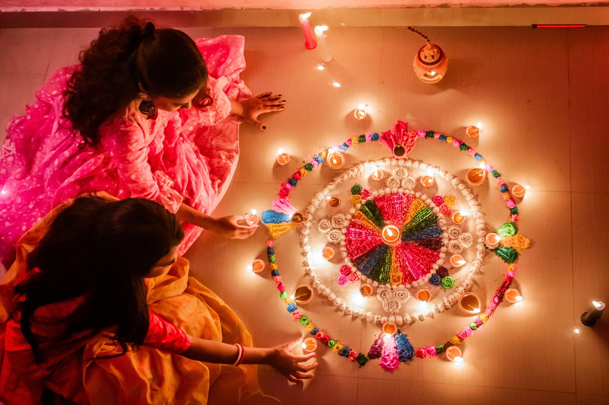

Intermediate
IntermediateKambi Kolam
The Morning Kambi
An interlaced pattern for a thoughtful start to the day. A reusable stencil inspired by the flowing lines of kambi kolam.
₹349GUIDE PRICEView design
Thoughtfully crafted Rangoli and Kolam stencils that bring a little tradition, creativity and everyday beauty to your doorstep.

Find a pattern that belongs to yours. From everyday kolam to a festive flourish, there’s beauty in every detail.
IntermediateAn interlaced pattern for a thoughtful start to the day. A reusable stencil inspired by the flowing lines of kambi kolam.

IntricateLayered, balanced lines inspired by traditional padi kolam. A graceful centrepiece for a welcoming entrance.

BeginnerOpen petals and gentle symmetry make this floral design a beautiful starting point for festive colour.

At the threshold of a home, a kolam is a quiet gesture of welcome. Its dots, loops and lines carry creativity from one morning to the next.
Our collection draws inspiration from these rich practices, making space for both the first-time learner and the person who has loved them for years.
“Beauty begins with a thoughtful welcome.”
Discover our storyGood design leaves room for your own creativity.
Reusable stencil designs that you can return to for everyday moments and special occasions.
Choose open beginner patterns or explore finer details as your confidence grows.
Select a motif, size or personalized name to suit your space and celebration.
Choose the detail level that feels right for your time, space and confidence.
A family name. A wedding motif. A design that fits your doorway just right. Begin with an idea and explore what your custom stencil could become.
Explore Custom Designs
A clean surface, a gentle sift and a careful lift. That’s a good place to start.
Start on a clean, dry, level surface. Set the stencil down so it sits flat.
Sift a small amount of fine rangoli powder evenly across the openings.
Lift the stencil vertically and carefully. Add colours or flowers if you wish.
Inspiration for entrances, quiet corners and festive gatherings.



Simple ideas for bringing a thoughtful creative ritual home.
Begin with one simple pattern. Give yourself time to enjoy the making.
Let a meaningful motif bring a little creativity to a gathering.
A gentle first attempt can be the beginning of a beautiful daily ritual.
Stories, how-tos and a little inspiration for your next beautiful beginning.

A gentle, practical introduction to making your first stencil kolam, from surface preparation to the final lift.
Read the story
Bring together thoughtful kolam patterns and a welcoming entrance for the harvest celebration.
Read the story
Choose scale, placement and a simple border to bring a compact threshold to life.
Read the storyA name, a memory, a celebration. Let’s turn your idea into a thoughtfully designed custom stencil.
Let’s Create Together